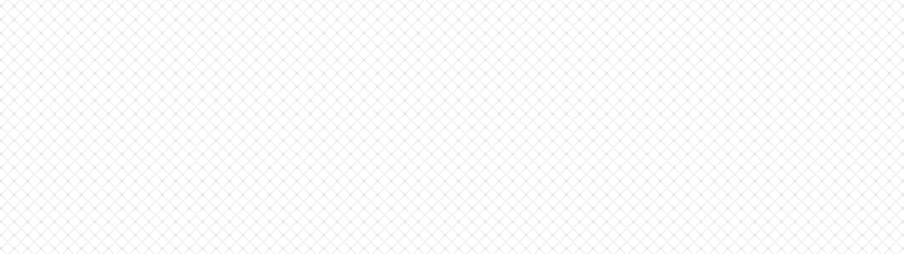

Ruka Touge's Portfolio
Voice1
Voice2
Home
担当

砂のカップケーキ




台本
女 今日のおやつはね〜？じゃーん！凄い色のカップケーキです！
海外ドラマ見ててね？
ヒロインちゃんがちょー美味しそうに食べてたからぁ…作ってみたの。どーぞ！
男（心の声）（家庭科部に所属しているコイツは、
本当に文化部所属なのか、疑いたくなるほどいつもハイテンションだ。）
女 遠慮しなくて良いよ〜？食べな〜？
男（心の声）（幼馴染とはいえ、
好きで一人でいるオレにわざわざ話しかけにこなくてもいいのに。）
男 他の奴にあげりゃぁ良いのに…
まぁゆーて毎回美味いから…有難いけど。
女 ほんと〜！
良かった…あんたに美味しいって言ってもらったら自信つく。
男 そう？
女 そうだよ〜良くも悪くも素直だからねぇ〜
美味しくない時は美味しくないって言うじゃん。
女 だから…今回のも安心して彼氏に渡せる。
いつもありがと。
男 えっ…はぁ…？……げほっげほ（咽せる）
女 わー！大丈夫…？！
男（美味しかったはずのそれは味が消え、
口ん中にジャリジャリとした食感だけが広がった…。）
海外ドラマ見ててね？
ヒロインちゃんがちょー美味しそうに食べてたからぁ…作ってみたの。どーぞ！
男（心の声）（家庭科部に所属しているコイツは、
本当に文化部所属なのか、疑いたくなるほどいつもハイテンションだ。）
女 遠慮しなくて良いよ〜？食べな〜？
男（心の声）（幼馴染とはいえ、
好きで一人でいるオレにわざわざ話しかけにこなくてもいいのに。）
男 他の奴にあげりゃぁ良いのに…
まぁゆーて毎回美味いから…有難いけど。
女 ほんと〜！
良かった…あんたに美味しいって言ってもらったら自信つく。
男 そう？
女 そうだよ〜良くも悪くも素直だからねぇ〜
美味しくない時は美味しくないって言うじゃん。
女 だから…今回のも安心して彼氏に渡せる。
いつもありがと。
男 えっ…はぁ…？……げほっげほ（咽せる）
女 わー！大丈夫…？！
男（美味しかったはずのそれは味が消え、
口ん中にジャリジャリとした食感だけが広がった…。）

担当
企画立案、シナリオ作成、ディレクション、キャスト

備考
あじわいやおもしろみが、まったくない例えで使われる「砂を噛むよう」
という表現を物語に落とし込みたいと思い作成しました。男は女に好意を
持っていましたが、想いを伝えられず、その隙に「別の男と女が付き合った」
と言う話を女本人から聞き、美味しかったはずの手作りお菓子の味が消え、
砂を食べているように感じてしまいます。
という表現を物語に落とし込みたいと思い作成しました。男は女に好意を
持っていましたが、想いを伝えられず、その隙に「別の男と女が付き合った」
と言う話を女本人から聞き、美味しかったはずの手作りお菓子の味が消え、
砂を食べているように感じてしまいます。

本当の自分
VoiceDorama2
台本

ダウンロードリンク
備考

担当
企画立案、シナリオ作成、ディレクション、キャスト
学内の演劇部所属の2人。
男の方は別の演劇部から偵察目的で現れますが、それを見抜いていた女。
題名につけた「本当の自分」と言うのは、演劇のしすぎで本当の自分がわからなく
なった女と別の演劇部から女1人が運営する演劇部に入部したいと考える男の本当
の願いをベースに、男が即興で作った嘘の過去や新たな来訪者が現れた際にとっさ
に出た女の本当の喜びの感情に掛けたものです
男の方は別の演劇部から偵察目的で現れますが、それを見抜いていた女。
題名につけた「本当の自分」と言うのは、演劇のしすぎで本当の自分がわからなく
なった女と別の演劇部から女1人が運営する演劇部に入部したいと考える男の本当
の願いをベースに、男が即興で作った嘘の過去や新たな来訪者が現れた際にとっさ
に出た女の本当の喜びの感情に掛けたものです